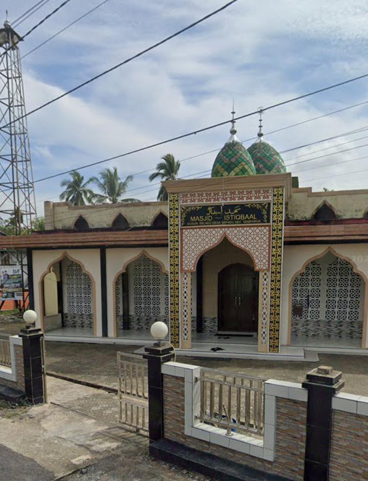

Gotong Royong
Kebersamaan dan saling membantu menjadi bagian penting dalam kehidupan masyarakat.
Nilai kebersamaan yang menjadi bagian dari kehidupan masyarakat desa.
Kebersamaan dan saling membantu menjadi bagian penting dalam kehidupan masyarakat.
Kehidupan sehari-hari diwarnai dengan interaksi dan hubungan kekeluargaan antarwarga.
Lingkungan sekitar merupakan bagian penting yang perlu dijaga bersama.
Sederhana dalam kehidupan, namun kuat dalam kebersamaan.

Menjadi bagian dari kehidupan masyarakat dan lingkungan desa.
Desa Sepadu • Dusun Seladu